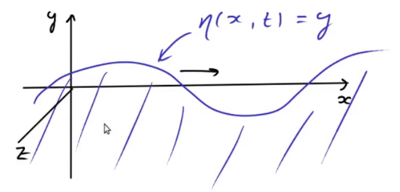

16 Surface waves 1
We will now look at an example that combines the two topics of this module: waves and fluids. We will look at the waves on the surface of water. As waves move over the surface, of course the fluid below the surface needs to rearrange, so the shape of the wave and the flow of the fluid are coupled.
You find content related to this lecture in the textbooks:
- Acheson (1990) section 3.2
- Baldock and Bridgeman (1983) sections 10.1, 10.2 and 10.3.1
- Paterson (1983) sections 13.1 - 13.3
- Braithwaite (2017) section 5.1
If we use the \(y\) coordinate as the vertical coordinate we can describe the surface by the equation \(y = \eta(x,z,t)\) for some function \(\eta\). We will simplify our calculations by looking for plane waves. We choose the \(z\) axis to point in the direction along which the plane wave is constant. Then we can describe the surface by a function \(\eta(x,t)\) that is independent of \(z\). This is depicted in Figure 16.1. This will lead to a two-dimensional flow in the fluid that we can describe by a velocity field \(\underline{u}=(u_x(x,y,t),u_y(x,y,t),0)\).

We further simplify the problem by assuming that the water is infinitely deep and infinitely extended in the \(x\) and \(z\) directions, so that we do not have to impose any boundary conditions except at the surface. This is akin to how in the waves section of this module we first looked at the infinite string.
We will assume that the flow of the water is irrotational. This is certainly justified if we think of surface waves created for example by wind blowing over the surface of water at rest. This means that we can describe the flow by a velocity potential \(\phi(x,y,t)\) so that \(\underline{u}=\underline{\nabla}\phi\), or, in components, \(u_x=\partial_x\phi\) and \(u_y=\partial_y\phi\).
We describe the water as an ideal fluid. In particular we treat water as incompressible, which implies that the flow is divergence free: \[ \underline{\nabla}\cdot\underline{u}=\underline{\nabla}\cdot\underline{\nabla}\phi=\underline{\nabla}^2\phi=\partial_x^2\phi+\partial_y^2\phi=0. \tag{16.1}\]
This is the Laplace equation. The Laplace equation has many other applications in both pure and applied mathematics. Solutions of the Laplace equation are known as harmonic functions. You will meet them again in many other modules.
We have seen that the real part of any holomorphic function satisfies the Laplace equation. But we are looking not for an arbitrary incompressible flow but one that fits the wave on its surface. This means that next we need to write down equations that couple the shape of the surface described by \(\eta\) to the flow of the water described by \(\underline{u}\) or \(\phi\). These are the surface conditions.
16.1 Surface conditions
We consider the interface between the water and the air. We use the fact that the density of the air is negligible compared to that of water and thus treat the surface as a free surface. At such a surface there are two conditions: the kinematic surface condition and the dynamic surface condition, which we will introduce in the next two subsections.
16.1.1 Kinematic condition
The kinematic condition states that fluid particles on the surface stay on the surface.
If we introduce the distance \(d\) of a point from the surface \[ d(x,y,t)=y-\eta(x,t) \tag{16.2}\] then the particles at the surface have \(d=0\) and this will stay constant as the particle moves around, i.e., \[\begin{split} \frac{Dd}{Dt}&=\partial_td+\underline{u}\cdot\underline{\nabla} d=\partial_td+u_x\partial_x d+u_y\partial_y d\\ &=-\partial_t\eta-u_x\partial_x \eta+u_y=0. \end{split} \tag{16.3}\] This is the kinematic surface condition and holds at all points at the surface, i.e., all points with \(y=\eta(x,t)\).
16.1.2 Dynamic condition
The dynamic condition states that the pressure at the surface equals the atmospheric pressure \(p_0\).
According to Euler’s equation \[ \partial_t\underline{u}+(\underline{\nabla}\times\underline{u})\times\underline{u}=-\underline{\nabla}\left(\frac{p}{\rho}+\frac12 u^2+\chi\right), \tag{16.4}\] where \(p\) is the pressure, \(\rho\) is the density and \(\chi\) is the gravitational potential. The left-hand side simplifies for an irrotational flow described by a velocity potential \(\phi\), \[ \underline{\nabla}(\partial_t\phi)=-\underline{\nabla}\left(\frac{p}{\rho}+\frac12 u^2+\chi\right). \tag{16.5}\] We can integrate this to give \[ \partial_t\phi+\frac{p}{\rho}+\frac12 u^2+\chi=G(t) \tag{16.6}\] for some integration constant \(G(t)\). (Note that by ‘constant’ in this constant we mean independent of the spatial variables. A time dependence does not affect the gradient.) The gravitational potential is acting in the negative \(y\) direction, so \(\chi = g\,y\). At the surface \(y=\eta\) we have \(p=p_0\), so \[ \partial_t\phi+\frac12 u^2+g\eta=G(t)-\frac{p_0}{\rho}, \tag{16.7}\] where we have collected all the constant terms on the right-hand side. We now use that shifting a potential by a constant does not make a difference because it is only the gradient of the potential that is relevant. We can thus simplify the equation by shifting \(\phi \to\phi+s(t)\) where we choose \(s(t)\) such that \(s'(t)=G(t)-p_0/\rho\). This new potential satisfies \[ \partial_t\phi+\frac12 u^2+g\eta=0 \tag{16.8}\] This is the dynamical surface condition and holds at all points at the surface, i.e., the points with \(y=\eta(x,t)\).
16.2 Linear approximation
The surface conditions contain non-linear terms. That makes them impossible to solve analytically. So we linearise the equations. For the kinematic surface condition Eq. 16.3 this means \[ -\partial_t\eta-u_x\partial_x \eta+u_y=0 \longrightarrow -\partial_t\eta+u_y=0. \tag{16.9}\] We assume that the term that we are dropping is small, something we will need to verify later. Even after dropping the quadratic term, there is still a complicated dependence on \(\eta\) which we need to drop as well: \[ \partial_t\eta(x,t)=u_y(x,\eta(x,t),t) \longrightarrow \partial_t\eta(x,t)=u_y(x,0,t). \tag{16.10}\] This is the linearised kinematic surface condition that we will use.
Similarly we linearise the dynamic surface condition to \[ \partial_t\phi(x,0,t)=-g\eta(x,t). \tag{16.11}\]
16.3 Harmonic travelling wave solution
Our task now is to solve the equations 16.1, 16.10 and 16.11. We will do this with the harmonic travelling wave Ansatz that we discussed in lecture 51: \[ \eta(x,t)=A\cos(kx-\omega t). \tag{16.12}\] Then in order to have a chance of satisfying Eq. 16.11 we need to make the following Ansatz for \(\phi\): \[ \phi(x,y,t)=f(y)\sin(kx-\omega t), \tag{16.13}\] where \(f(y)\) is an as yet undetermined function. To determine it we substitute this Ansatz into the Laplace equation Eq. 16.1. This gives \[ -k^2 f(y)\sin(kx-\omega t)+f''(y)\sin(kx-\omega t)=0. \tag{16.14}\] Dividing by \(\sin(kx-\omega t)\) leaves us with a very simple ODE for \(f\): \[ f''(y)=k^2f(y). \tag{16.15}\] The general solution is \[ f(y)=D e^{k\,y} + E e^{-k\,y} \tag{16.16}\] for some undetermined constants \(D\) and \(E\). However \(E=0\) in the case of infinite deep water because otherwise the function would go to \(\infty\) as \(y\to-\infty\).
1 We could include a phase as in lecture 5 but it would just come along for the ride and not add anything interesting.
Substituting into the dynamic surface condition Eq. 16.11 gives \[ -\omega f(0)\cos(kx-\omega t)=-g\,A\cos(kx-\omega t) \tag{16.17}\] and thus \[ D=\frac{g\,A}{\omega}. \tag{16.18}\]
Finally, substituting into the kinematic surface condition Eq. 16.10 gives \[ \omega\,A\sin(kx-\omega t)=f'(0)\sin(kx-\omega t). \tag{16.19}\] Because \(f'(0)=kD=k\,g\,A/\omega\), this gives \[ \omega^2=k\, g~~\text{ or }~~ \omega=\pm\sqrt{k\,g}. \tag{16.20}\] This is the dispersion relation.
So we have found a harmonic wave solution \[ \eta=A\cos(kx-\omega t) \tag{16.21}\] for any wave number \(k\) and amplitude \(A\), where \(\omega=\pm\sqrt{k\,g}\). Thus the wave moves with a velocity of \(c=\omega/k=\pm\sqrt{g/k}\). The flow underneath the wave is described by the velocity potential \[ \phi=\frac{A\omega}{k}e^{ky}\sin(kx-\omega t). \tag{16.22}\]